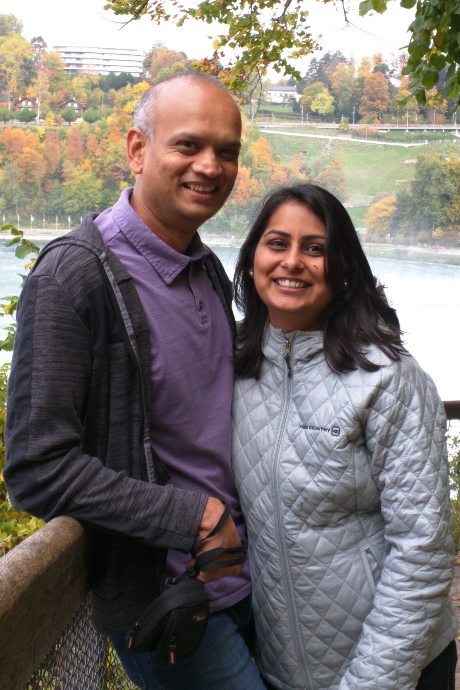

Madhav Parekh
About Me

Ever evolving web technologies have kept me fascinated for years and now have brought me to this boot camp to learn full stack development.
I have spent several years developing and testing software protocols for cellular network technology such as GPRS, UMTS, and 2G/3G in early 2000s. And for past 12+ years, I have been successfully running 2 franchised restaurants. My involvement with Franchisee System has sharpened my Fiscal & Business Management, Organizational, Negotiation, and Interpersonal skills.
However, my passion of coding and networking always stayed with me. I have automated many repetitive tasks of accountings and payrolls with coding scripts and Microsoft Office. I have designed & maintained failsafe Internet Networks with utmost security & scalability. I was one of the six Franchisees who took an initiative to design, implement, and debug Point of Sales Systems with the Franchisor, which has been rolled out to 1500+ restaurants. I have kept up with developments in the field of technology by reading articles and online tutorials.
During this boot camp, Frontend is where I will struggle more as UI/GUI is not my forte and Backend is where I should be ok as I have done a lot of work on server side with scripts, queries, and algorithms.
I am hoping to learn ins and outs of web technologies from this boot camp and hit the ground running.